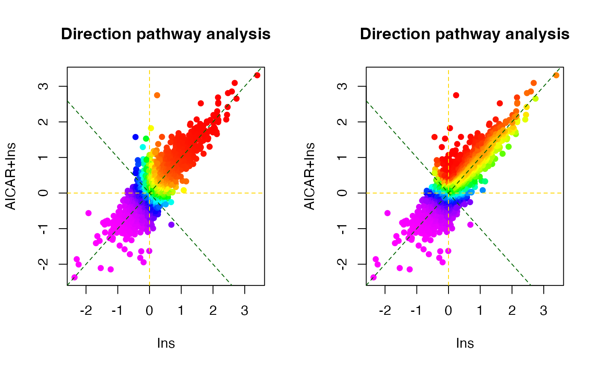
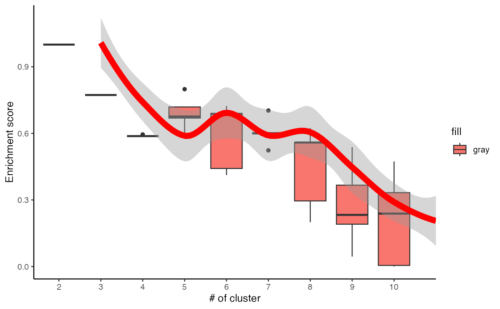

An introduction to PhosR package
Taiyun Kim
School of Mathematics and Statistics, The University of SydneyHani Jieun Kim
School of Mathematics and Statistics, The University of SydneyDi Xiao
Computational Systems Biology Group, Children’s Medical Research Institute, Faculty of Medicine and Health, The University of SydneyPengyi Yang
School of Mathematics and Statistics, The University of SydneyPhosR.RmdIntroduction
PhosR is a package for the comprehensive analysis of phosphoproteomic data. There are two major components to PhosR: processing and downstream analysis. PhosR consists of various processing tools for phosphoproteomic data including filtering, imputation, normalisaton and batch correction, enabling integration of multiple phosphoproteomic datasets. Downstream analytical tools consists of site- and protein-centric pathway analysis to evaluate activities of kinases and signalling pathways, large-scale kinase-substrate annotation from dynamic phosphoproteomic profiling, and visualisation and construction of signalomes present in the phosphoproteomic data of interest.
Below is a schematic overview of main componenets of PhosR, categorised into two broad steps of data analytics - processing and downstream analysis.

Overview of PhosR methods
The purpose of this vignette is to illustrate some uses of PhosR and explain its key components.
Installation
Install the latest development version from GitHub using the devtools package:
library(devtools)
devtools::install_github("PYangLab/PhosR")To install the Bioconductor version of PhosR, enter the following to your R console.
#if (!requireNamespace("BiocManager", quietly = TRUE))
# install.packages("BiocManager")
#
#BiocManager::install("PhosR")Loading packages and data
suppressPackageStartupMessages({
library(PhosR)
})For demonstration purposes, we provide a rat L6 myotubes phosphoproteome dataset in our package. The data contains ratios of samples treated with AICAR, an analog of adenosine monophosphate that stimulates AMPK activity, insulin (Ins), or in combination (AICAR+Ins) with the basal condition. The raw data have been deposited to the ProteomeXchange Consortium via the PRIDE partner repository under PRIDE: PXD019127.
Setting up the PhosphoExperiment object
To increase compatibility of PhosR functions with diverse processed datasets, we have implemented a PhosphoExperiment (ppe) object based on the SummarizedExperiment class. To create the PhosphoExperiment object, you will need a quantification matrix where columns refer to cells and rows refer to sites.
data("phospho_L6_ratio")
ppe <- PhosphoExperiment(assays = list(Quantification = as.matrix(phospho.L6.ratio)))## Warning in .se_to_pe(se, UniprotID, GeneSymbol, Site, Residue, Sequence, : GeneSymbol is not specified. This may affect subsequent analysis steps.## Warning in .se_to_pe(se, UniprotID, GeneSymbol, Site, Residue, Sequence, : Site is not specified. This may affect subsequent analysis steps.## Warning in .se_to_pe(se, UniprotID, GeneSymbol, Site, Residue, Sequence, : Sequence is not specified. This may affect subsequent analysis steps.## Warning in .se_to_pe(se, UniprotID, GeneSymbol, Site, Residue, Sequence, : Residue is not specified. This may affect subsequent analysis steps.
class(ppe)## [1] "PhosphoExperiment"
## attr(,"package")
## [1] "PhosR"Additional annotation labels for the sites should be provided alongside the matrix. For each phosphosite, these include gene symbol, residue, position of phosphosite residue in the amino acid chain, and flanking sequence information of the phosphosite. Additional information such as the localisation probability may also be included.
ppe@GeneSymbol <- sapply(strsplit(rownames(ppe), ";"), "[[", 2)
ppe@Residue <- gsub("[0-9]","", sapply(strsplit(rownames(ppe), ";"), "[[", 3))
ppe@Site <- as.numeric(gsub("[A-Z]","", sapply(strsplit(rownames(ppe), ";"), "[[", 3)))
ppe@Sequence <- sapply(strsplit(rownames(ppe), ";"), "[[", 4)Collectively, we can set up our data as following.
ppe <- PhosphoExperiment(assays = list(Quantification = as.matrix(phospho.L6.ratio)),
Site = as.numeric(gsub("[A-Z]","", sapply(strsplit(rownames(ppe), ";"), "[[", 3))),
GeneSymbol = sapply(strsplit(rownames(ppe), ";"), "[[", 2),
Residue = gsub("[0-9]","", sapply(strsplit(rownames(ppe), ";"), "[[", 3)),
Sequence = sapply(strsplit(rownames(ppe), ";"), "[[", 4))
ppe## class: PhosphoExperiment
## dim: 6660 12
## metadata(0):
## assays(1): Quantification
## rownames(6660): Q6AYR1;TFG;S198;MSAFGLTDDQVSGPPSAPTEDRSGTPDSIAS
## D3ZRN2;MED1;T1035;STGGSKSPGSSGRCQTPPGVATPPIPKITIQ ...
## F1LYK3;LOC685707;S810;VKPPSIANLDKVNSNSLDLPSSSDTHASKVP
## G3V7U4;LMNB1;S393;RKLLEGEEERLKLSPSPSSRVTVSRASSSRS
## rowData names(0):
## colnames(12): AICAR_exp1 AICAR_exp2 ... AICARIns_exp3 AICARIns_exp4
## colData names(0):Part A. Preprocessing
Imputation
Introduction
PhosR is a package for the all-rounded analysis of phosphoproteomic data from processing to downstream analysis. This vignette will provide a step-by-step workflow of how PhosR can be used to process and analyse a a panel of phosphoproteomic datasets. As one of the first steps of data processing in phosphoproteomic analysis, we will begin by performing filtering and imputation of phosphoproteomic data with PhosR.
Loading packages and data
First, we will load the PhosR package. If you already haven’t done so, please install PhosR as instructed in the main page.
suppressPackageStartupMessages({
library(PhosR)
})Setting up the data
We assume that you will have the raw data processed using platforms frequently used for mass-spectrometry based proteomics such as MaxQuant. For demonstration purposes, we will take a parts of phosphoproteomic data generated by Humphrey et al. with accession number PXD001792. The dataset contains the phosphoproteomic quantifications of two mouse liver cell lines (Hepa1.6 and FL38B) that were treated with either PBS (mock) or insulin.
Let us load the PhosphoExperiment (ppe) object
## [1] "PhosphoExperiment"
## attr(,"package")
## [1] "PhosR"A quick glance of the object.
ppe## class: PhosphoExperiment
## dim: 5000 24
## metadata(0):
## assays(1): Quantification
## rownames(5000): Q7TPV4;MYBBP1A;S1321;PQSALPKKRARLSLVSRSPSLLQSGVKKRRV
## Q3UR85;MYRF;S304;PARAPSPPWPPQGPLSPGTGSLPLSIARAQT ...
## P28659-4;NA;S18;AFKLDFLPEMMVDHCSLNSSPVSKKMNGTLD
## E9Q8I9;FRY;S1380;HNIELVDSRLLLPGSSPSSPEDEVKDREGEV
## rowData names(0):
## colnames(24): Intensity.FL83B_Control_1 Intensity.FL83B_Control_2 ...
## Intensity.Hepa1.6_Ins_5 Intensity.Hepa1.6_Ins_6
## colData names(0):We will take the grouping information from colnames of our matrix.
For each cell line, there are two conditions (Control vs Insulin-stimulated) and 6 replicates for each condition.
# FL38B
gsub("Intensity.", "", grps)[1:12]## [1] "FL83B_Control" "FL83B_Control" "FL83B_Control" "FL83B_Control"
## [5] "FL83B_Control" "FL83B_Control" "FL83B_Ins" "FL83B_Ins"
## [9] "FL83B_Ins" "FL83B_Ins" "FL83B_Ins" "FL83B_Ins"
# Hepa1
gsub("Intensity.", "", grps)[13:24]## [1] "Hepa1.6_Control" "Hepa1.6_Control" "Hepa1.6_Control" "Hepa1.6_Control"
## [5] "Hepa1.6_Control" "Hepa1.6_Control" "Hepa1.6_Ins" "Hepa1.6_Ins"
## [9] "Hepa1.6_Ins" "Hepa1.6_Ins" "Hepa1.6_Ins" "Hepa1.6_Ins"Note that there are in total 24 samples and 5,000 phosphosites profiled.
dim(ppe)## [1] 5000 24Filtering of phosphosites
Next, we will perform some filtering of phosphosites so that only phosphosites with quantification for at least 50% of the replicates in at least one of the conditions are retained. For this filtering step, we use the selectGrps function. The filtering leaves us with 1,772 phosphosites.
ppe_filtered <- selectGrps(ppe, grps, 0.5, n=1)
dim(ppe_filtered)## [1] 1772 24selectGrps gives you the option to relax the threshold for filtering. The filtering threshold can therefore be optimized for each dataset.
# In cases where you have fewer replicates ( e.g.,triplicates), you may want to
# select phosphosites quantified in 70% of replicates.
ppe_filtered_v1 <- selectGrps(ppe, grps, 0.7, n=1)
dim(ppe_filtered_v1)## [1] 1330 24Imputation of phosphosites
We can proceed to imputation now that we have filtered for suboptimal phosphosites. To take advantage of data structure and experimental design, PhosR provides users with a lot of flexibility for imputation. There are three functions for imputation: scImpute,tInmpute, and ptImpute. Here, we will demonstrate the use of scImpute and ptImpute.
Site- and condition-specific imputation
The scImpute function is used for site- and condition-specific imputation. A pre-defined thereshold is used to select phosphosites to impute. Phosphosites with missing values equal to or greater than a predefined value will be imputed by sampling from the empirical normal distribution constructed from the quantification values of phosphosites from the same condition.
In the above example, only phosphosites that are quantified in more than 50% of samples from the same condition will be imputed.
Paired tail-based imputation
We then perform paired tail-based imputation on the dataset imputed with scImpute. Paired tail-based imputation performs imputation of phosphosites that have missing values in all replicates in one condition (e.g. in basal) but not in another condition (e.g., in stimulation). This method of imputation ensures that we do not accidentally filter phosphosites that seemingly have low detection rate.
As for scImpute, we can set a predefined threshold to in another condition (e.g. stimulation), the tail-based imputation is applied to impute for the missing values in the first condition.
As for scImpute, we can set a predefined threshold to in another condition (e.g. stimulation), the tail-based imputation is applied to impute for the missing values in the first condition.
set.seed(123)
ppe_imputed <- ppe_imputed_tmp
ppe_imputed[,seq(6)] <- ptImpute(ppe_imputed[,seq(7,12)],
ppe_imputed[,seq(6)],
percent1 = 0.6, percent2 = 0, paired = FALSE)## idx1: 12
ppe_imputed[,seq(13,18)] <- ptImpute(ppe_imputed[,seq(19,24)],
ppe_imputed[,seq(13,18)],
percent1 = 0.6, percent2 = 0,
paired = FALSE)## idx1: 29Lastly, we perform normalisation of the filtered and imputed phosphoproteomic data.
ppe_imputed_scaled <- medianScaling(ppe_imputed, scale = FALSE, assay = "imputed")Quantification plots
A useful function in PhosR is to visualize the percentage of quantified sites before and after filtering and imputation. The main inputs of plotQC are the quantification matrix, sample labels (equating the column names of the matrix), an integer indicating the panel to plot, and lastly, a color vector. To visualize the percentage of quantified sites, use the plotQC function and set panel = “quantify” to visualise bar plots of samples.
p1 = plotQC(ppe_filtered@assays@data$Quantification, labels=colnames(ppe_filtered),
panel = "quantify", grps = grps)
p2 = plotQC(ppe_imputed_scaled@assays@data$scaled,
labels=colnames(ppe_imputed_scaled), panel = "quantify", grps = grps)
ggpubr::ggarrange(p1, p2, nrow = 1)
By setting panel = “dendrogram”, we can visualise the results of unsupervised hierarchical clustering of samples as a dendrogram. The dendrogram demonstrates that imputation has improved the clustering of the samples so that replicates from the same conditions cluster together.
p1 = plotQC(ppe_filtered@assays@data$Quantification,
labels=colnames(ppe_filtered), panel = "dendrogram",
grps = grps)
p2 = plotQC(ppe_imputed_scaled@assays@data$scaled,
labels=colnames(ppe_imputed_scaled),
panel = "dendrogram", grps = grps)
ggpubr::ggarrange(p1, p2, nrow = 1)
We can now move onto the next step in the PhosR workflow: integration of datasets and batch correction.
Batch correction
Introduction
A common but largely unaddressed challenge in phosphoproteomic data analysis is to correct for batch effect. Without correcting for batch effect, it is often not possible to analyze datasets in an integrative manner. To perform data integration and batch effect correction, we identified a set of stably phosphorylated sites (SPSs) across a panel of phosphoproteomic datasets and, using these SPSs, implemented a wrapper function of RUV-III from the ruv package called RUVphospho.
Note that when the input data contains missing values, imputation should be performed before batch correction since RUV-III requires a complete data matrix. The imputed values are removed by default after normalisation but can be retained for downstream analysis if the users wish to use the imputed matrix. This vignette will provide an example of how PhosR can be used for batch correction.
Loading packages and data
If you haven’t already done so, load the PhosR package.
In this example, we will use L6 myotube phosphoproteome dataset (with accession number PXD019127) and the SPSs we identified from a panel of phosphoproteomic datasets (please refer to our preprint for the full list of the datasets used). The SPSs will be used as our negative control in RUV normalisation.
## class: PhosphoExperiment
## dim: 6654 12
## metadata(0):
## assays(1): Quantification
## rownames(6654): D3ZNS8;AAAS;S495;THIPLYFVNAQFPRFSPVLGRAQEPPAGGGG
## Q9R0Z7;AAGAB;S210;RSVGSAESCQCEQEPSPTAERTESLPGHRSG ...
## D3ZG78;ZZEF1;S1516;SGPSAAEVSTAEEPSSPSTPTRRPPFTRGRL
## D3ZG78;ZZEF1;S1535;PTRRPPFTRGRLRLLSFRSMEETRPVPTVKE
## rowData names(0):
## colnames(12): AICAR_exp1 AICAR_exp2 ... AICARIns_exp3 AICARIns_exp4
## colData names(0):Setting up the data
The L6 myotube data contains phosphoproteomic samples from three treatment conditions each with quadruplicates. Myotube cells were treated with either AICAR or Insulin (Ins), which are both important modulators of the insulin signalling pathway, or both (AICARIns) before phosphoproteomic analysis.
## [1] "AICAR_exp1" "AICAR_exp2" "AICAR_exp3" "AICAR_exp4"## [1] "Ins_exp1" "Ins_exp2" "Ins_exp3" "Ins_exp4"## [1] "AICARIns_exp1" "AICARIns_exp2" "AICARIns_exp3" "AICARIns_exp4"Note that we have in total 6654 quantified phosphosites and 12 samples in total.
dim(ppe)## [1] 6654 12We have already performed the relevant processing steps to generate a dense matrix. Please refer to the imputation page to perform filtering and imputation of phosphosites in order to generate a matrix without any missing values.
## [1] 0We will extract phosphosite labels.
sites = paste(sapply(ppe@GeneSymbol, function(x)x),";",
sapply(ppe@Residue, function(x)x),
sapply(ppe@Site, function(x)x),
";", sep = "")Lastly, we will take the grouping information from colnames of our matrix.
## [1] "AICAR" "AICAR" "AICAR" "AICAR" "Ins" "Ins"
## [7] "Ins" "Ins" "AICARIns" "AICARIns" "AICARIns" "AICARIns"Diagnosing batch effect
There are a number of ways to diagnose batch effect. In PhosR, we make use of two visualisation methods to detect batch effect: dendrogram of hierarchical clustering and a principal component analysis (PCA) plot. We use the plotQC function we introduced in the imputation section of the vignette.
By setting panel = “dendrogram”, we can plot the dendrogram illustrating the results of unsupervised hierarchical clustering of our 12 samples. Clustering results of the samples demonstrate that there is a strong batch effect (where batch denoted as expX, where X refers to the batch number). This is particularly evident for samples from Ins and AICARIns treated conditions.
plotQC(ppe@assays@data$Quantification, panel = "dendrogram", grps=grps, labels = colnames(ppe)) +
ggplot2::ggtitle("Before batch correction")
We can also visualise the samples in PCA space by setting panel = “pca”. The PCA plot demonstrates aggregation of samples by batch rather than treatment groups (each point represents a sample coloured by treatment condition). It has become clearer that even within the AICAR treated samples, there is some degree of batch effect as data points are separated between samples from batches 1 and 2 and those from batches 3 and 4.
plotQC(ppe@assays@data$Quantification, grps=grps, labels = colnames(ppe), panel = "pca") +
ggplot2::ggtitle("Before batch correction")
Correcting batch effect
We have now diagnosed that our dataset exhibits batch effect that is driven by experiment runs for samples treated with three different conditions. To address this batch effect, we correct for this unwanted variation in the data by utilising our pre-defined SPSs as a negative control for RUVphospho.
First, we construct a design matrix by condition.
design = model.matrix(~ grps - 1)
design## grpsAICAR grpsAICARIns grpsIns
## 1 1 0 0
## 2 1 0 0
## 3 1 0 0
## 4 1 0 0
## 5 0 0 1
## 6 0 0 1
## 7 0 0 1
## 8 0 0 1
## 9 0 1 0
## 10 0 1 0
## 11 0 1 0
## 12 0 1 0
## attr(,"assign")
## [1] 1 1 1
## attr(,"contrasts")
## attr(,"contrasts")$grps
## [1] "contr.treatment"We will then use the RUVphospho function to normalise the data. Besides the quantification matrix and the design matrix, there are two other important inputs to RUVphospho: 1) the ctl argument is an integer vector denoting the position of SPSs within the quantification matrix 2) k parameter is an integer denoting the expected number of experimental (e.g., treatment) groups within the data
# phosphoproteomics data normalisation and batch correction using RUV
ctl = which(sites %in% SPSs)
ppe = RUVphospho(ppe, M = design, k = 3, ctl = ctl)Quality control
As quality control, we will demonstrate and evaluate our normalisation method with hierarchical clustering and PCA plot using again plotQC. Both the hierarchical clustering and PCA results demonstrate the normalisation procedure in PhosR facilitates effective batch correction.
# plot after batch correction
p1 = plotQC(ppe@assays@data$Quantification, grps=grps, labels = colnames(ppe), panel = "dendrogram" )
p2 = plotQC(ppe@assays@data$normalised, grps=grps, labels = colnames(ppe), panel="dendrogram")
ggpubr::ggarrange(p1, p2, nrow = 1)
# plot after batch correction
p1 = plotQC(ppe@assays@data$Quantification, panel = "pca", grps=grps, labels = colnames(ppe)) +
ggplot2::ggtitle("Before Batch correction")
p2 = plotQC(ppe@assays@data$normalised, grps=grps, labels = colnames(ppe), panel="pca") +
ggplot2::ggtitle("After Batch correction")
ggpubr::ggarrange(p1, p2, nrow = 2)
Generating SPSs
We note that the current SPS are derived from phosphoproteomic datasets derived from mouse cells. To enable users working on phosphoproteomic datasets derived from other species, we have developed a function getSPS that takes in multiple phosphoproteomics datasets stored as phosphoExperiment objects to generate set of SPS. Users can use their in-house or public datasets derived from the same speciies to generate species-specific SPS, which they can use to normalise their data.Below demonstrate the usage of the getSPS function.
First, load datasets to use for SPS generation.
data("phospho_L6_ratio_pe")
data("phospho.liver.Ins.TC.ratio.RUV.pe")
data("phospho.cells.Ins.pe")
ppe1 <- phospho.L6.ratio.pe
ppe2 <- phospho.liver.Ins.TC.ratio.RUV.pe
# ppe2 <- phospho.L1.Ins.ratio.subset.pe
ppe3 <- phospho.cells.Ins.peFilter, impute, and transform ppe3 (other inputs have already been processed).
grp3 = gsub('_[0-9]{1}', '', colnames(ppe3))
ppe3 <- selectGrps(ppe3, grps = grp3, 0.5, n=1)
ppe3 <- tImpute(ppe3)
FL83B.ratio <- ppe3@assays@data$imputed[, 1:12] - rowMeans(ppe3@assays@data$imputed[,grep("FL83B_Control", colnames(ppe3))])
Hepa.ratio <- ppe3@assays@data$imputed[, 13:24] - rowMeans(ppe3@assays@data$imputed[,grep("Hepa1.6_Control", colnames(ppe3))])
ppe3@assays@data$Quantification <- cbind(FL83B.ratio, Hepa.ratio)Generate inputs of getSPS.
ppe.list <- list(ppe1, ppe2, ppe3)
# ppe.list <- list(ppe1, ppe3)
cond.list <- list(grp1 = gsub("_.+", "", colnames(ppe1)),
grp2 = str_sub(colnames(ppe2), end=-5),
grp3 = str_sub(colnames(ppe3), end=-3))Finally run getSPS to generate list of SPSs.
inhouse_SPSs <- getSPS(ppe.list, conds = cond.list)## Warning: there aren't enough overlappling sites
head(inhouse_SPSs)## [1] "TMPO;S67;" "RBM5;S621;" "SRRM1;S427;" "THOC2;S1417;" "SSB;S92;"
## [6] "PPIG;S252;"Run RUVphospho using the newly generateed SPSs. (NOTE that we do not expect the results to be reproducible as the exempler SPSs have been generated from dummy datasets that have been heavily filtered.)
Part B. Downstream analysis
Pathway analysis
Introduction
Most phosphoproteomic studies have adopted a phosphosite-level analysis of the data. To enable phosphoproteomic data analysis at the gene level, PhosR implements both site- and gene-centric analyses for detecting changes in kinase activities and signalling pathways through traditional enrichment analyses (over-representation or rank-based gene set test, together referred to as‘1-dimensional enrichment analysis’) as well as 2- and 3-dimensional analyses.
This vignette will perform gene-centric pathway enrichment analyses on the normalised myotube phosphoproteomic dataset using both over-representation and rank–based gene set tests and also provide an example of how directPA can be used to test which kinases are activated upon different stimulations in myotubes using 2-dimensional analyses Yang et al. 2014.
Loading packages and data
First, we will load the PhosR package with few other packages will use for the demonstration purpose.
We will use RUV normalised L6 phosphopreteome data for demonstration of gene-centric pathway analysis. It contains phosphoproteome from three different treatment conditions: (1) AMPK agonist AICAR, (2) insulin (Ins), and (3) in combination (AICAR+Ins).
suppressPackageStartupMessages({
library(calibrate)
library(limma)
library(directPA)
library(org.Rn.eg.db)
library(reactome.db)
library(annotate)
library(PhosR)
})
data("PhosphoSitePlus")We will use the ppe_RUV matrix from batch_correction.
1-dimensional enrichment analysis
To enable enrichment analyses on both gene and phosphosite levels, PhosR implements a simple method called phosCollapse which reduces phosphosite level of information to the proteins for performing downstream gene-centric analyses. We will utilise two functions, pathwayOverrepresent and pathwayRankBasedEnrichment, to demonstrate 1-dimensional (over-representation and rank-based gene set test) gene-centric pathway enrichment analysis respectively.
First, extract phosphosite information from the ppe object.
sites = paste(sapply(ppe@GeneSymbol, function(x)x),";",
sapply(ppe@Residue, function(x)x),
sapply(ppe@Site, function(x)x),
";", sep = "")Then fit a linear model for each phosphosite.
f <- gsub("_exp\\d", "", colnames(ppe))
X <- model.matrix(~ f - 1)
fit <- lmFit(ppe@assays@data$normalised, X)Extract top-differentially regulated phosphosites for each condition compared to basal.
table.AICAR <- topTable(eBayes(fit), number=Inf, coef = 1)
table.Ins <- topTable(eBayes(fit), number=Inf, coef = 3)
table.AICARIns <- topTable(eBayes(fit), number=Inf, coef = 2)
DE1.RUV <- c(sum(table.AICAR[,"adj.P.Val"] < 0.05), sum(table.Ins[,"adj.P.Val"] < 0.05), sum(table.AICARIns[,"adj.P.Val"] < 0.05))
# extract top-ranked phosphosites for each group comparison
contrast.matrix1 <- makeContrasts(fAICARIns-fIns, levels=X) # defining group comparisons
contrast.matrix2 <- makeContrasts(fAICARIns-fAICAR, levels=X) # defining group comparisons
fit1 <- contrasts.fit(fit, contrast.matrix1)
fit2 <- contrasts.fit(fit, contrast.matrix2)
table.AICARInsVSIns <- topTable(eBayes(fit1), number=Inf)
table.AICARInsVSAICAR <- topTable(eBayes(fit2), number=Inf)
DE2.RUV <- c(sum(table.AICARInsVSIns[,"adj.P.Val"] < 0.05), sum(table.AICARInsVSAICAR[,"adj.P.Val"] < 0.05))
o <- rownames(table.AICARInsVSIns)
Tc <- cbind(table.Ins[o,"logFC"], table.AICAR[o,"logFC"], table.AICARIns[o,"logFC"])
rownames(Tc) <- sites[match(o, rownames(ppe))]
rownames(Tc) <- gsub("(.*)(;[A-Z])([0-9]+)(;)", "\\1;\\3;", rownames(Tc))
colnames(Tc) <- c("Ins", "AICAR", "AICAR+Ins")Summarize phosphosite-level information to proteins for the downstream gene-centric analysis.
Tc.gene <- phosCollapse(Tc, id=gsub(";.+", "", rownames(Tc)),
stat=apply(abs(Tc), 1, max), by = "max")
geneSet <- names(sort(Tc.gene[,1],
decreasing = TRUE))[seq(round(nrow(Tc.gene) * 0.1))]
head(geneSet)## [1] "PPP1R13L" "SYNPO2L" "AHNAK" "USP10" "SENP7" "ATG2A"Prepare the Reactome annotation
pathways = as.list(reactomePATHID2EXTID)
path_names = as.list(reactomePATHID2NAME)
name_id = match(names(pathways), names(path_names))
names(pathways) = unlist(path_names)[name_id]
pathways = pathways[which(grepl("Rattus norvegicus", names(pathways), ignore.case = TRUE))]
pathways = lapply(pathways, function(path) {
gene_name = unname(getSYMBOL(path, data = "org.Rn.eg"))
toupper(unique(gene_name))
})Perform 1D gene-centric pathway analysis
path1 <- pathwayOverrepresent(geneSet, annotation=pathways,
universe = rownames(Tc.gene), alter = "greater")
path2 <- pathwayRankBasedEnrichment(Tc.gene[,1],
annotation=pathways,
alter = "greater")Next, we will compare enrichment of pathways (in negative log10 p-values) between the two 1-dimensional pathway enrichment analysis. On the scatter plot, the x-axis and y-axis refer to the p-values derived from the rank-based gene set test and over-representation test, respectively. We find several expected pathways, while these highly enriched pathways are largely in agreement between the two types of enrichment analyses.
lp1 <- -log10(as.numeric(path2[names(pathways),1]))
lp2 <- -log10(as.numeric(path1[names(pathways),1]))
plot(lp1, lp2, ylab="Overrepresentation (-log10 pvalue)", xlab="Rank-based enrichment (-log10 pvalue)", main="Comparison of 1D pathway analyses", xlim = c(0, 10))
# select highly enriched pathways
sel <- which(lp1 > 1.5 & lp2 > 0.9)
textxy(lp1[sel], lp2[sel], gsub("_", " ", gsub("REACTOME_", "", names(pathways)))[sel])
2- and 3-dimensional signalling pathway analysis
One key aspect in studying signalling pathways is to identify key kinases that are involved in signalling cascades. To identify these kinases, we make use of kinase-substrate annotation databases such as PhosphoSitePlus and Phospho.ELM. These databases are included in the PhosR and directPA packages already. To access them, simply load the package and access the data by data(“PhosphoSitePlus”) and data(“PhosphoELM”).
The 2- and 3-dimensional analyses enable the investigation of kinases regulated by different combinations of treatments. We will introduce more advanced methods implemented in the R package directPA for performing “2 and 3-dimentional” direction site-centric kinase activity analyses.
# 2D direction site-centric kinase activity analyses
par(mfrow=c(1,2))
dpa1 <- directPA(Tc[,c(1,3)], direction=0,
annotation=lapply(PhosphoSite.rat, function(x){gsub(";[STY]", ";", x)}),
main="Direction pathway analysis")
dpa2 <- directPA(Tc[,c(1,3)], direction=pi*7/4,
annotation=lapply(PhosphoSite.rat, function(x){gsub(";[STY]", ";", x)}),
main="Direction pathway analysis")
# top activated kinases
dpa1$pathways[1:5,]## pvalue size
## AKT1 6.207001e-09 9
## MAPK1 0.00057404 9
## PRKACA 0.0006825021 25
## PRKAA1 0.000965093 6
## MAPK3 0.006670176 10
dpa2$pathways[1:5,]## pvalue size
## PRKAA1 0.00463462 6
## AKT1 0.02942273 9
## CSNK2A1 0.2193148 12
## CDK5 0.2607434 5
## MAPK1 0.2767886 9There is also a function called perturbPlot2d implemented in kinasePA for testing and visualising activity of all kinases on all possible directions. Below are the demonstration from using this function.
z1 <- perturbPlot2d(Tc=Tc[,c(1,2)],
annotation=lapply(PhosphoSite.rat, function(x){gsub(";[STY]", ";", x)}),
cex=1, xlim=c(-2, 4), ylim=c(-2, 4),
main="Kinase perturbation analysis")
z2 <- perturbPlot2d(Tc=Tc[,c(1,3)], annotation=lapply(PhosphoSite.rat, function(x){gsub(";[STY]", ";", x)}),
cex=1, xlim=c(-2, 4), ylim=c(-2, 4),
main="Kinase perturbation analysis")
z3 <- perturbPlot2d(Tc=Tc[,c(2,3)], annotation=lapply(PhosphoSite.rat, function(x){gsub(";[STY]", ";", x)}),
cex=1, xlim=c(-2, 4), ylim=c(-2, 4),
main="Kinase perturbation analysis")
Site- and gene- centric analysis
Introduction
While 1, 2, and 3D pathway analyses are useful for data generated from experiments with different treatment/conditions, analysis designed for time-course data may be better suited to analysis experiments that profile multiple time points.
Here, we will apply ClueR which is an R package specifically designed for time-course proteomic and phosphoproteomic data analysis Yang et al. 2015.
Loading packages and data
We will load the PhosR package with few other packages we will use for this tutorial.
suppressPackageStartupMessages({
library(parallel)
library(ggplot2)
library(ClueR)
library(reactome.db)
library(org.Mm.eg.db)
library(annotate)
library(PhosR)
})We will load a dataset integrated from two time-course datasets of early and intermediate insulin signalling in mouse liver upon insulin stimulation to demonstrate the time-course phosphoproteomic data analyses.
# data("phospho_liverInsTC_RUV_pe")
data("phospho.liver.Ins.TC.ratio.RUV.pe")
ppe <- phospho.liver.Ins.TC.ratio.RUV.pe
ppe## class: PhosphoExperiment
## dim: 800 90
## metadata(0):
## assays(1): Quantification
## rownames(800): LARP7;256; SRSF10;131; ... SIK3;493; GSK3A;21;
## rowData names(0):
## colnames(90): Intensity.Liver_Ins_0s_Bio7 Intensity.Liver_Ins_0s_Bio8
## ... Intensity.Liver_Ins_10m_Bio5 Intensity.Liver_Ins_10m_Bio6
## colData names(0):Gene-centric analyses of the liver phosphoproteome data
Let us start with gene-centric analysis. Such analysis can be directly applied to proteomics data. It can also be applied to phosphoproteomic data by using the phosCollapse function to summarise phosphosite information to proteins.
# take grouping information
grps <- sapply(strsplit(colnames(ppe), "_"),
function(x)x[3])
# select differentially phosphorylated sites
sites.p <- matANOVA(ppe@assays@data$Quantification,
grps)
ppm <- meanAbundance(ppe@assays@data$Quantification, grps)
sel <- which((sites.p < 0.05) & (rowSums(abs(ppm) > 1) != 0))
ppm_filtered <- ppm[sel,]
# summarise phosphosites information into gene level
ppm_gene <- phosCollapse(ppm_filtered,
gsub(";.+", "", rownames(ppm_filtered)),
stat = apply(abs(ppm_filtered), 1, max), by = "max")
# perform ClueR to identify optimal number of clusters
pathways = as.list(reactomePATHID2EXTID)
pathways = pathways[which(grepl("R-MMU", names(pathways), ignore.case = TRUE))]
pathways = lapply(pathways, function(path) {
gene_name = unname(getSYMBOL(path, data = "org.Mm.eg"))
toupper(unique(gene_name))
})
RNGkind("L'Ecuyer-CMRG")
set.seed(123)
c1 <- runClue(ppm_gene, annotation=pathways,
kRange = seq(2,10), rep = 5, effectiveSize = c(5, 100),
pvalueCutoff = 0.05, alpha = 0.5)
# Visualise the evaluation results
data <- data.frame(Success=as.numeric(c1$evlMat), Freq=rep(seq(2,10), each=5))
myplot <- ggplot(data, aes(x=Freq, y=Success)) +
geom_boxplot(aes(x = factor(Freq), fill="gray")) +
stat_smooth(method="loess", colour="red", size=3, span = 0.5) +
xlab("# of cluster") +
ylab("Enrichment score") +
theme_classic()
myplot## `geom_smooth()` using formula 'y ~ x'
set.seed(123)
best <- clustOptimal(c1, rep=5, mfrow=c(2, 3), visualize = TRUE)
Site-centric analyses of the liver phosphoproteome data
Phosphosite-centric analyses will perform using kinase-substrate annotation information from PhosphoSitePlus.
RNGkind("L'Ecuyer-CMRG")
set.seed(1)
PhosphoSite.mouse2 = mapply(function(kinase) {
gsub("(.*)(;[A-Z])([0-9]+;)", "\\1;\\3", kinase)
}, PhosphoSite.mouse)
# perform ClueR to identify optimal number of clusters
c3 <- runClue(ppm_filtered, annotation=PhosphoSite.mouse2, kRange = 2:10, rep = 5, effectiveSize = c(5, 100), pvalueCutoff = 0.05, alpha = 0.5)
# Visualise the evaluation results
data <- data.frame(Success=as.numeric(c3$evlMat), Freq=rep(2:10, each=5))
myplot <- ggplot(data, aes(x=Freq, y=Success)) + geom_boxplot(aes(x = factor(Freq), fill="gray"))+
stat_smooth(method="loess", colour="red", size=3, span = 0.5) + xlab("# of cluster")+ ylab("Enrichment score")+theme_classic()
myplot## `geom_smooth()` using formula 'y ~ x'
set.seed(1)
best <- clustOptimal(c3, rep=10, mfrow=c(2, 3), visualize = TRUE)
# Finding enriched pathways from each cluster
best$enrichList## $`cluster 1`
## kinase pvalue size
## [1,] "PRKACA" "0.000184676866298047" "5"
## substrates
## [1,] "NR1H3;196;|MARCKS;163;|PRKACA;339;|ITPR1;1755;|SIK3;493;"
##
## $`cluster 3`
## kinase pvalue size
## [1,] "Humphrey.Akt" "0.000162969329853963" "5"
## [2,] "Yang.Akt" "0.000165386907010959" "6"
## substrates
## [1,] "TSC2;939;|PFKFB2;486;|FOXO3;252;|FOXO1;316;|GSK3A;21;"
## [2,] "AKT1S1;247;|TSC2;939;|PFKFB2;486;|FOXO3;252;|FOXO1;316;|GSK3A;21;"Signalomes
Introduction
Lastly, a key component of the PhosR package is to construct signalomes. The signalome construction is composed of two main steps: 1) kinase-substrate relationsip scoring and 2) signalome construction. This involves a sequential workflow where the outputs of the first step are used as inputs of the latter step.
In brief, our kinase-substrate relationship scoring method (kinaseSubstrateScore and kinaseSubstratePred) prioritises potential kinases that could be responsible for the phosphorylation change of phosphosite on the basis of kinase recognition motif and phosphoproteomic dynamics. Using the kinase-substrate relationships derived from the scoring methods, we reconstruct signalome networks present in the data (Signalomes) wherin we highlight kinase regulation of discrete modules.
##3 Loading packages and data
First, we will load the PhosR package along with few other packages that we will be using in this section of the vignette.
suppressPackageStartupMessages({
library(PhosR)
library(dplyr)
library(ggplot2)
library(GGally)
library(ggpubr)
library(calibrate)
library(network)
})We will also be needing data containing kinase-substrate annotations from PhosphoSitePlus, kinase recognition motifs from kinase motifs, and annotations of kinase families from kinase family.
data("KinaseMotifs")
data("KinaseFamily")
data("phospho_L6_ratio_pe")
data("SPSs")
ppe = phospho.L6.ratio.pe
sites = paste(sapply(ppe@GeneSymbol, function(x)x),";",
sapply(ppe@Residue, function(x)x),
sapply(ppe@Site, function(x)x),
";", sep = "")
grps = gsub("_.+", "", colnames(ppe))
design = model.matrix(~ grps - 1)
ctl = which(sites %in% SPSs)
ppe = RUVphospho(ppe, M = design, k = 3, ctl = ctl)Setting up the data
As before, we will set up the data by cleaning up the phoshophosite labels and performing RUV normalisation. We will generate the ppe_RUV matrix as in batch_correction.
data("phospho_L6_ratio")
data("SPSs")
##### Run batch correction
ppe <- phospho.L6.ratio.pe
sites = paste(sapply(ppe@GeneSymbol, function(x)x),";",
sapply(ppe@Residue, function(x)x),
sapply(ppe@Site, function(x)x),
";", sep = "")
grps = gsub("_.+", "", colnames(ppe))
design = model.matrix(~ grps - 1)
ctl = which(sites %in% SPSs)
ppe = RUVphospho(ppe, M = design, k = 3, ctl = ctl)
phosphoL6 = ppe@assays@data$normalisedGeneration of kinase-substrate relationship scores
Next, we will filtered for dynamically regulated phosphosites and then standardise the filtered matrix.
# filter for up-regulated phosphosites
phosphoL6.mean <- meanAbundance(phosphoL6, grps = gsub("_.+", "", colnames(phosphoL6)))
aov <- matANOVA(mat=phosphoL6, grps=gsub("_.+", "", colnames(phosphoL6)))
idx <- (aov < 0.05) & (rowSums(phosphoL6.mean > 0.5) > 0)
phosphoL6.reg <- phosphoL6[idx, ,drop = FALSE]
L6.phos.std <- standardise(phosphoL6.reg)
rownames(L6.phos.std) <- paste0(ppe@GeneSymbol, ";", ppe@Residue, ppe@Site, ";")[idx]We next extract the kinase recognition motifs from each phosphosite.
L6.phos.seq <- ppe@Sequence[idx]Now that we have all the inputs for kinaseSubstrateScore and kinaseSubstratePred ready, we can proceed to the generation of kinase-substrate relationship scores.
L6.matrices <- kinaseSubstrateScore(substrate.list = PhosphoSite.mouse,
mat = L6.phos.std, seqs = L6.phos.seq,
numMotif = 5, numSub = 1, verbose = FALSE)
set.seed(1)
L6.predMat <- kinaseSubstratePred(L6.matrices, top=30, verbose = FALSE) Signalome construction
The signalome construction uses the outputs of kinaseSubstrateScore and kinaseSubstratePred functions for the generation of a visualisation of the kinase regulation of discrete regulatory protein modules present in our phosphoproteomic data.
kinaseOI = c("PRKAA1", "AKT1")
Signalomes_results <- Signalomes(KSR=L6.matrices,
predMatrix=L6.predMat,
exprsMat=L6.phos.std,
KOI=kinaseOI)## calculating optimal number of clusters...## optimal number of clusters = 3## Note: The second link end is drawn out of sector '1'.## Note: The second link end is drawn out of sector '2'.## Note: The first link end is drawn out of sector 'MAP2K1'.## Note: The first link end is drawn out of sector 'MTOR'.## Note: The first link end is drawn out of sector 'TBK1'.
Generate signalome map
We can also visualise the relative contribution of each kinase towards the regulation of protein modules by plotting a balloon plot. In the balloon plot, the size of the balloons denote the percentage magnitude of kinase regulation in each module.
### generate palette
my_color_palette <- grDevices::colorRampPalette(RColorBrewer::brewer.pal(8, "Accent"))
kinase_all_color <- my_color_palette(ncol(L6.matrices$combinedScoreMatrix))
names(kinase_all_color) <- colnames(L6.matrices$combinedScoreMatrix)
kinase_signalome_color <- kinase_all_color[colnames(L6.predMat)]
plotSignalomeMap(signalomes = Signalomes_results, color = kinase_signalome_color)
Generate signalome network
Finally, we can also plot the signalome network that illustrates the connectivity between kinase signalome networks.
plotKinaseNetwork(KSR = L6.matrices, predMatrix = L6.predMat, threshold = 0.9, color = kinase_all_color)## Note: The second link end is drawn out of sector 'CAMK2A'.## Note: The second link end is drawn out of sector 'IRAK1'.## Note: The second link end is drawn out of sector 'MAP2K1'.## Note: The second link end is drawn out of sector 'PRKCD'.## Note: The second link end is drawn out of sector 'PRKCE'.## Note: The second link end is drawn out of sector 'PRKCH'.
Session Info
## R version 4.0.5 (2021-03-31)
## Platform: x86_64-apple-darwin17.0 (64-bit)
## Running under: macOS Catalina 10.15.7
##
## Matrix products: default
## BLAS: /Library/Frameworks/R.framework/Versions/4.0/Resources/lib/libRblas.dylib
## LAPACK: /Library/Frameworks/R.framework/Versions/4.0/Resources/lib/libRlapack.dylib
##
## Random number generation:
## RNG: L'Ecuyer-CMRG
## Normal: Inversion
## Sample: Rejection
##
## locale:
## [1] en_US.UTF-8/en_US.UTF-8/en_US.UTF-8/C/en_US.UTF-8/en_US.UTF-8
##
## attached base packages:
## [1] parallel stats4 stats graphics grDevices utils datasets
## [8] methods base
##
## other attached packages:
## [1] network_1.16.1 ggpubr_0.4.0 GGally_2.1.1
## [4] dplyr_1.0.5 org.Mm.eg.db_3.12.0 ClueR_1.4
## [7] e1071_1.7-6 annotate_1.68.0 XML_3.99-0.6
## [10] reactome.db_1.74.0 org.Rn.eg.db_3.12.0 AnnotationDbi_1.52.0
## [13] IRanges_2.24.1 S4Vectors_0.28.1 Biobase_2.50.0
## [16] BiocGenerics_0.36.0 directPA_1.5 limma_3.46.0
## [19] calibrate_1.7.7 MASS_7.3-53.1 ggplot2_3.3.3
## [22] stringr_1.4.0 PhosR_1.1.7 BiocStyle_2.18.1
##
## loaded via a namespace (and not attached):
## [1] readxl_1.3.1 backports_1.2.1
## [3] circlize_0.4.12 systemfonts_1.0.1
## [5] plyr_1.8.6 igraph_1.2.6
## [7] splines_4.0.5 GenomeInfoDb_1.26.7
## [9] digest_0.6.27 htmltools_0.5.1.1
## [11] viridis_0.6.0 fansi_0.4.2
## [13] magrittr_2.0.1 memoise_2.0.0
## [15] openxlsx_4.2.3 matrixStats_0.58.0
## [17] pkgdown_1.6.1 colorspace_2.0-0
## [19] blob_1.2.1 textshaping_0.3.3
## [21] haven_2.4.0 xfun_0.22
## [23] crayon_1.4.1 RCurl_1.98-1.3
## [25] jsonlite_1.7.2 glue_1.4.2
## [27] ruv_0.9.7.1 gtable_0.3.0
## [29] zlibbioc_1.36.0 XVector_0.30.0
## [31] DelayedArray_0.16.3 car_3.0-10
## [33] shape_1.4.5 abind_1.4-5
## [35] scales_1.1.1 pheatmap_1.0.12
## [37] DBI_1.1.1 rstatix_0.7.0
## [39] Rcpp_1.0.6 viridisLite_0.4.0
## [41] xtable_1.8-4 gridtext_0.1.4
## [43] foreign_0.8-81 bit_4.0.4
## [45] proxy_0.4-25 preprocessCore_1.52.1
## [47] httr_1.4.2 RColorBrewer_1.1-2
## [49] ellipsis_0.3.1 pkgconfig_2.0.3
## [51] reshape_0.8.8 farver_2.1.0
## [53] sass_0.3.1 utf8_1.2.1
## [55] tidyselect_1.1.0 labeling_0.4.2
## [57] rlang_0.4.10 reshape2_1.4.4
## [59] munsell_0.5.0 cellranger_1.1.0
## [61] tools_4.0.5 cachem_1.0.4
## [63] generics_0.1.0 RSQLite_2.2.6
## [65] broom_0.7.6 evaluate_0.14
## [67] fastmap_1.1.0 ggdendro_0.1.22
## [69] yaml_2.2.1 ragg_1.1.2
## [71] knitr_1.32 bit64_4.0.5
## [73] fs_1.5.0 zip_2.1.1
## [75] purrr_0.3.4 dendextend_1.14.0
## [77] nlme_3.1-152 xml2_1.3.2
## [79] compiler_4.0.5 curl_4.3
## [81] ggsignif_0.6.1 tibble_3.1.0
## [83] bslib_0.2.4 stringi_1.5.3
## [85] highr_0.8 desc_1.3.0
## [87] forcats_0.5.1 lattice_0.20-41
## [89] Matrix_1.3-2 markdown_1.1
## [91] vctrs_0.3.7 pillar_1.6.0
## [93] lifecycle_1.0.0 BiocManager_1.30.12
## [95] jquerylib_0.1.3 GlobalOptions_0.1.2
## [97] data.table_1.14.0 cowplot_1.1.1
## [99] bitops_1.0-6 GenomicRanges_1.42.0
## [101] R6_2.5.0 pcaMethods_1.82.0
## [103] bookdown_0.21 gridExtra_2.3
## [105] rio_0.5.26 SummarizedExperiment_1.20.0
## [107] rprojroot_2.0.2 withr_2.4.1
## [109] GenomeInfoDbData_1.2.4 mgcv_1.8-34
## [111] hms_1.0.0 ggtext_0.1.1
## [113] grid_4.0.5 tidyr_1.1.3
## [115] class_7.3-18 rmarkdown_2.7
## [117] MatrixGenerics_1.2.1 carData_3.0-4